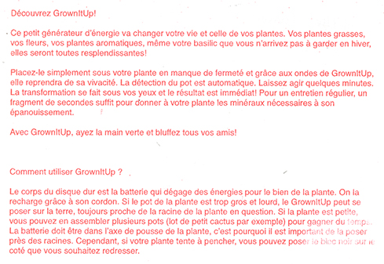

grown it up!
Starting from a hard drive, a neutral object without information about its function, I have imagined
how archeologists could have believed in its function in a distant future.
In that future, this black square object will serve to make
the plants grow. Those posters illustrate how it could work
and its result.
Printed in risography
December, 2016